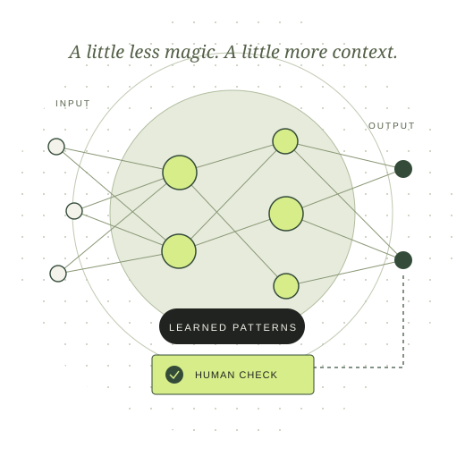

A study partner
Ask for practice questions or another explanation of a difficult concept.
THE HUMAN CHECK
Compare answers with class materials. Try solving the problem yourself first.
TECHNOLOGY, WITHOUT THE HYPE
A powerful tool. An imperfect answer.
A future we still get to shape.
Artificial intelligence is changing how we learn, work and create. Understanding it starts with knowing what it can do—and when to question it.
Let’s make sense of it
Patterns.
Predictions.
Possibilities.
Artificial intelligence is software that uses inputs to produce predictions, recommendations, decisions or content. Many systems learn patterns from examples rather than following a hand-written rule for every situation. Think of a spam filter learning which messages look suspicious. [1]
Generative AI makes text, images, audio or other content using patterns learned during training. A fluent answer can still be false: sounding right is different from being right. [2]
A useful way to think about it
AI supplies a suggestion. People supply context, judgment and responsibility.
02 / THE TRADE-OFFS
These are illustrative uses and precautions, not promises about every AI tool.
Ask for practice questions or another explanation of a difficult concept.
Compare answers with class materials. Try solving the problem yourself first.
Turn non-sensitive notes into a draft, or ask for help finding a coding error.
Review the wording, test the code and keep private information out.
AI can help energy operators forecast renewable generation and identify grid faults. [3]
Validate performance in real conditions and keep accountable operators involved.
Beyond mistakes: NIST identifies harmful bias, privacy leaks, over-reliance and cyber misuse as risks. A hiring tool could disadvantage a group; an automated agent could enable harmful actions. More autonomy needs stronger testing, limited permissions and supervision. [2]
REALITY CHECK / DOCUMENTED RISK
The US Federal Trade Commission warns that scammers can clone a relative’s voice from a short recording and invent an emergency. A familiar voice alone cannot prove who is calling. [4]
A caller sounds like a family member and urgently asks for money.
What’s the safest next step?
Choose an answer to reveal the check.
The future
has a power bill.
EVIDENCE & A DATED FORECAST
The IEA’s 2025 report estimated that data centres used 415 TWh of electricity in 2024 and projected about 945 TWh in 2030. Those figures cover all data centres, not AI alone; AI is a major driver of the projected growth. [3]
INTERPRETATION
Rising demand can strain local grids. It does not establish that AI will cause blackouts. Reliability depends on generation, networks and planning. Separately, dependence on online AI means a service outage could interrupt work; a manual fallback matters.
POSSIBLE FUTURE
AI could improve scientific research and public services, while also making fraud and cyberattacks easier. Outcomes remain uncertain. My view: useful progress means testing systems, protecting infrastructure and keeping people able to question or stop automated decisions.
FOLLOW THE EVIDENCE
Sources checked on 23 October 2026.
Forecasts retain their original publication date.
Inputs, models and outputs.
Errors, bias, privacy, security and oversight.
Energy applications, electricity estimates and scenarios.
Voice cloning and independent verification.
HOW THIS WEBSITE WAS MADE
I used Codex to help research, write and code this website. Information was checked against the sources linked above.